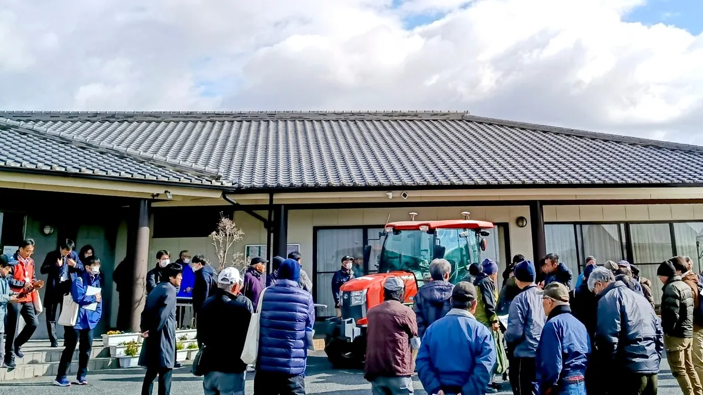
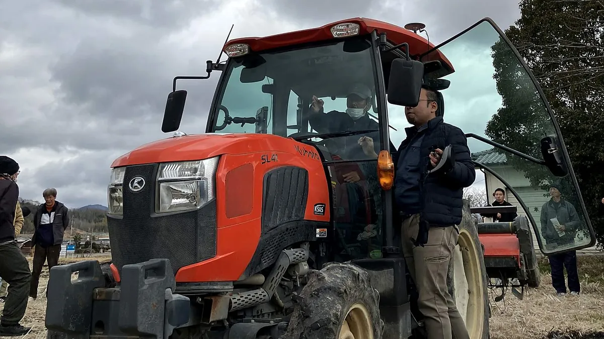
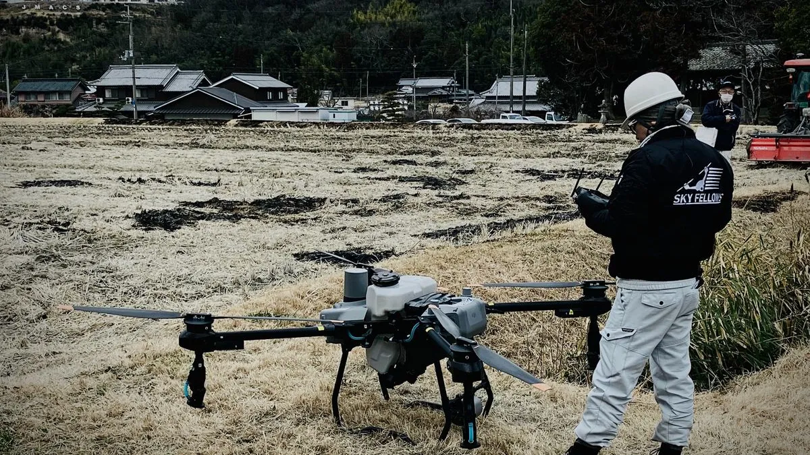
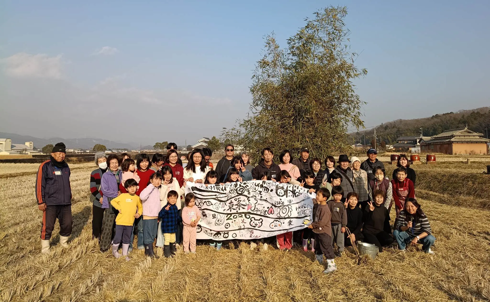

RTK VRS “数センチの革命”
－農業DXが切り開く、地方の未来

「GPSの位置が何かズレてる気がする…」
カーナビでもよくあるこの“数メートルの誤差”が、農業においては収量や品質を左右する致命的な問題になります。畝（うね）が曲がる、散布ムラが出る、蛇行走行で燃料が無駄になり、結果的に後工程の作業効率が著しく低下するのです。
こうした誤差を劇的に解消する農業DXのコア技術が「RTK（リアルタイム・キネマティック測位）」です。
1. RTKとは ― “数cmの世界”で走る農機
通常のGPS誤差は数メートルに及びますが、RTKは基地局からの補正信号を受けることで、誤差をわずか2～3cmまで抑えることができる技術です。

つまり、「誰が運転しても、まっすぐ耕せる・まっすぐ植えられる」状態になります。RTKが導入された自動操舵トラクターは、長時間の直進作業でも精度を崩さず、オペレーターの疲労や技量差をほぼゼロにします。まさに自動運転の安定性を支える“縁の下の力持ち”です。
2. VRSとは ― 可搬式の“仮想基地局”
RTKを使いたくても、「地域によっては基地局の電波が弱い」という課題があります。しかし、基地局の増設には莫大な設備投資が必要です。
そこで登場するのが「VRS（Virtual Reference Station：仮想基準点方式）」です。

VRSは簡単に言えば、手で持ち運べる“ミニ基地局”です。設置した場所で電源をオンにすれば、「ここだけ電波が悪い」という地点をピンポイントで改善し、数センチ単位で正確に測位します。トラクターのみならず自動操縦ドローン等にも使える汎用性があり、GPSとSIMさえあれば利用可能です。
3. 自動操舵トラクターがもたらす5つの変化
RTK・VRSを使ったスマート農業は、単なる“便利装置”にとどまりません。現場に以下の5つの大きな変化をもたらします。
- オペレーターの疲労を激減させる：長時間の直進作業でも精度がブレず、体力の消耗を極限まで抑えられます。
- 作業を“属人化”させない：経験不足の新人でもベテラン並みの精度で作業でき、人材採用のハードルが下がります。
- ムダ走行が減り、燃費が改善する：蛇行や重複作業がゼロになるため、燃料コストが直接的に下がります。
- 作業時間の短縮と再作業の削減：日没後でも精度が落ちないため、夜間作業の効率と安全性が担保されます。
- トラクターの寿命が延びる可能性：ムダな負荷が減ることで機材の長寿命化が図れ、将来的な投資頻度を下げられる可能性があります。
4. それでも導入が進まない“最大の壁”
メリットが多いにもかかわらず、なぜ導入が進まないのでしょうか。多くの農家が直面している本当の問題は、「人にかかっているコストが見えないこと」です。
早朝の水管理、炎天下での重労働、繁忙期の休みゼロ。これらは本来すべて「コスト」ですが、農家の使命感で吸収され、数字として経営に現れません。そのため「機械は高いから…」という理由で導入が遅れ、産業の構造的問題が放置されてしまうのです。
5. 農業が“地域の未来をつくる産業”へ
農業は本来、地域の強みとなり、若者が戻る理由をつくり、地方の未来を支える基幹産業であるべきです。だからこそスマート農業は、単なる効率化ではなく、この価値を取り戻すための“次のステージへの入口”になります。
使命感に依存しない働き方を実現し、努力が正しく報酬へつながる仕組みを整える。RTKやVRSがもたらす“数センチ”の精度は、農業の働き方を変え、地域の未来そのものを変えるきっかけになります。
最大の壁は、技術やコストではなく、変化を受け入れる側の意識にあります。
「どうせ」農業は儲からない。「どうせ」この街には何もない。「どうせ」変わらない。
その「どうせ」の一言で、どれだけの未来が閉じてきたでしょうか。
失敗したら成功するまでやり直せばいい。ないならつくればいい。変わらないなら自分で変えればいい。東条地域には、“他では絶対に真似できない”土地の力と、受け継がれてきた知恵、そして挑戦を楽しむ人の心があります。

この記事を書いた「とうじょうRMO」について
岡本・森・南山の3地区が協力し、農地を守り、地域資源を活かし、暮らしを支える農村型地域運営組織（農村RMO）です。スマート農業とコミュニティの力で、山田錦の産地を次の世代へつなぐ挑戦をしています。
この挑戦の目撃者になりませんか？
とうじょうRMOでは、スマート農業の活用を含め、地域資源を守り抜くための新しい仕組みづくりに挑んでいます。
私たちの活動の「いま」を、まずは公式LINEから覗いてみてください。